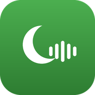

✨ يتوفر تحديث جديد للتطبيق
🔄 تحديث الآن
✕
🤲
آمين 🤲
جاري التحميل...
جاري التحميل...
English
﴿
راديو قرآن
﴾
صفحة
اللهم لك الحمد
صدقة جارية لجميع أموات المسلمين
المصحف
الأذكار
الأدعية
الأحاديث
حصن المسلم

اختر محطة للتشغيل
جاهز
70%
إيقاف المؤقت
15 دقيقة
30 دقيقة
60 دقيقة
90 دقيقة
المؤقت
📻 مرحبًا بك في موقع راديو قرآن صفحة اللهم لك الحمد | تم إضافة المصحف والأذكار من حصن المسلم مع عداد ذكي | يمكنك الآن حفظ تقدمك في القراءة والأذكار | للإبلاغ عن رابط معطل: 01092116092
تلاوات مختارة - الأذكار - الرقية
القاهرة - نابلس - السعودية
باقي الإذاعات
دروس وعبر
المفضلات
مسح الكل
لا توجد محطات مفضلة